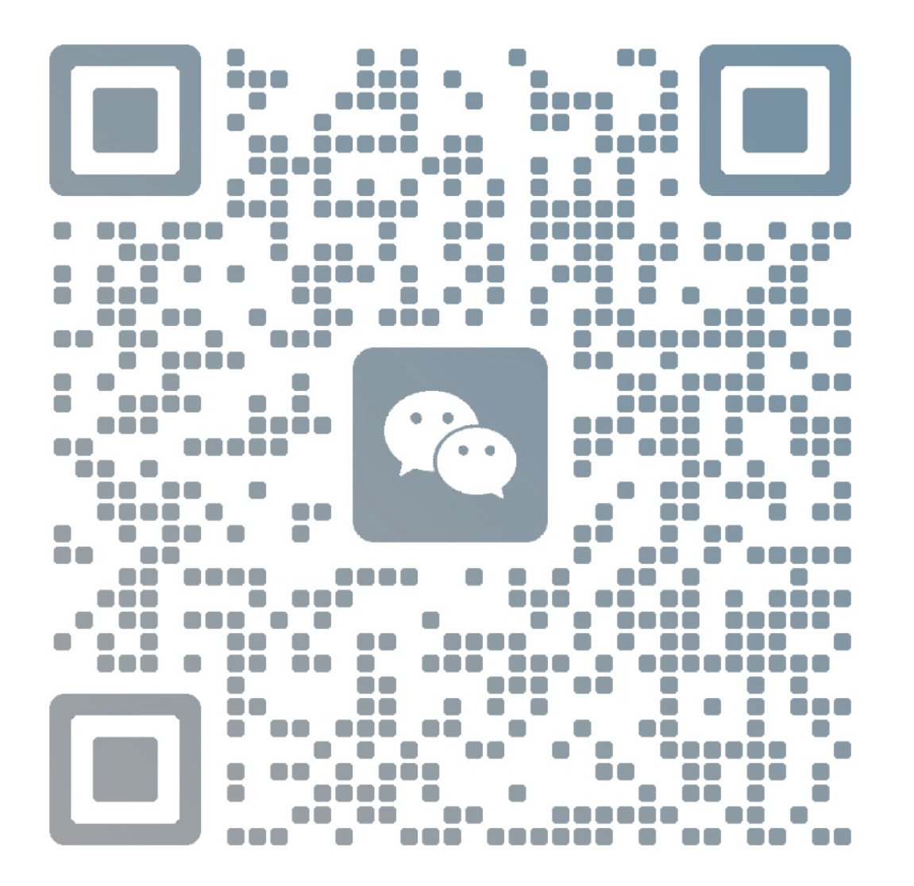

杨 可 祎
前端开发工程师 · UI 设计爱好者
热爱把想法变成可交互的作品。专注于 Web 前端与视觉体验，相信「简洁即力量」。
Skills · 技能
HTML5
JavaScript
TypeScript
React
Vue
Tailwind
CSS
Node.js
Figma
Contact · 联系方式
QR · 扫码分享

扫一扫，把我的名片带走 ✨
Analytics · 访问统计
总访问
0
今日
0
微信
0
复制
0
数据保存在本机 · LocalStorage